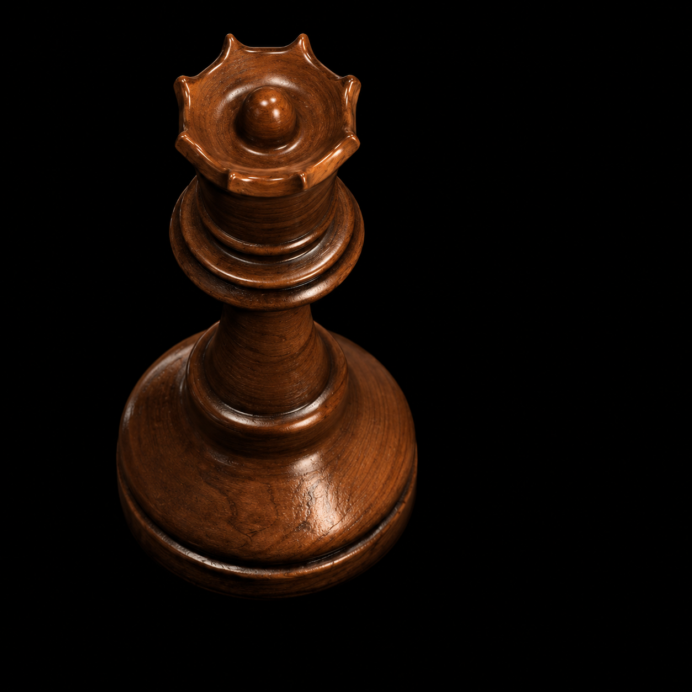
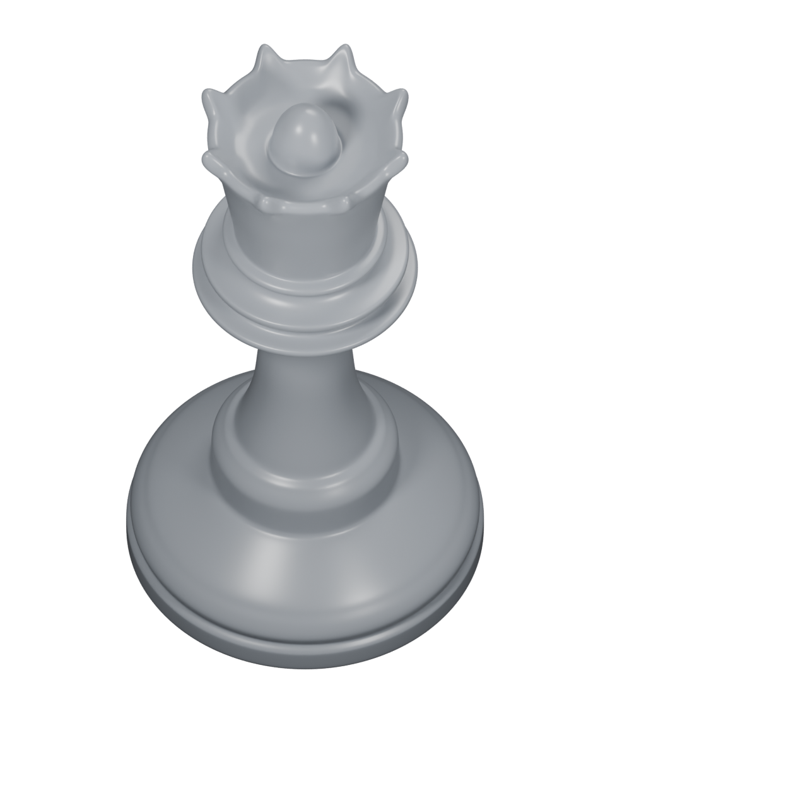
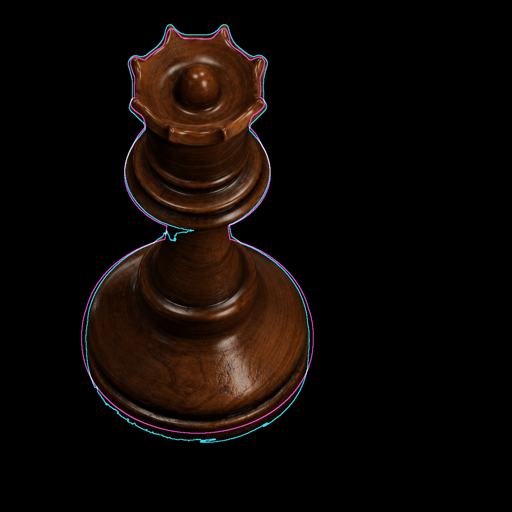
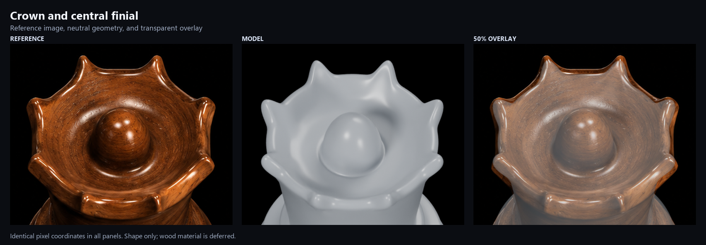
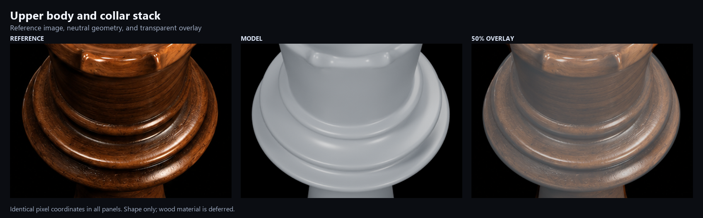
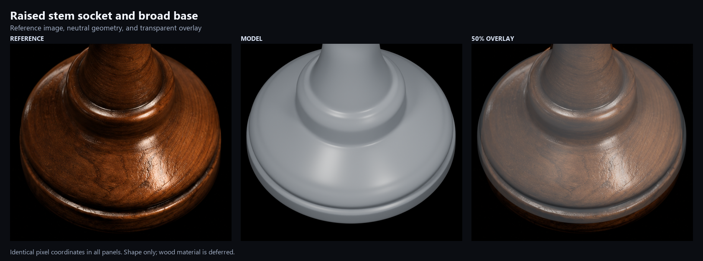
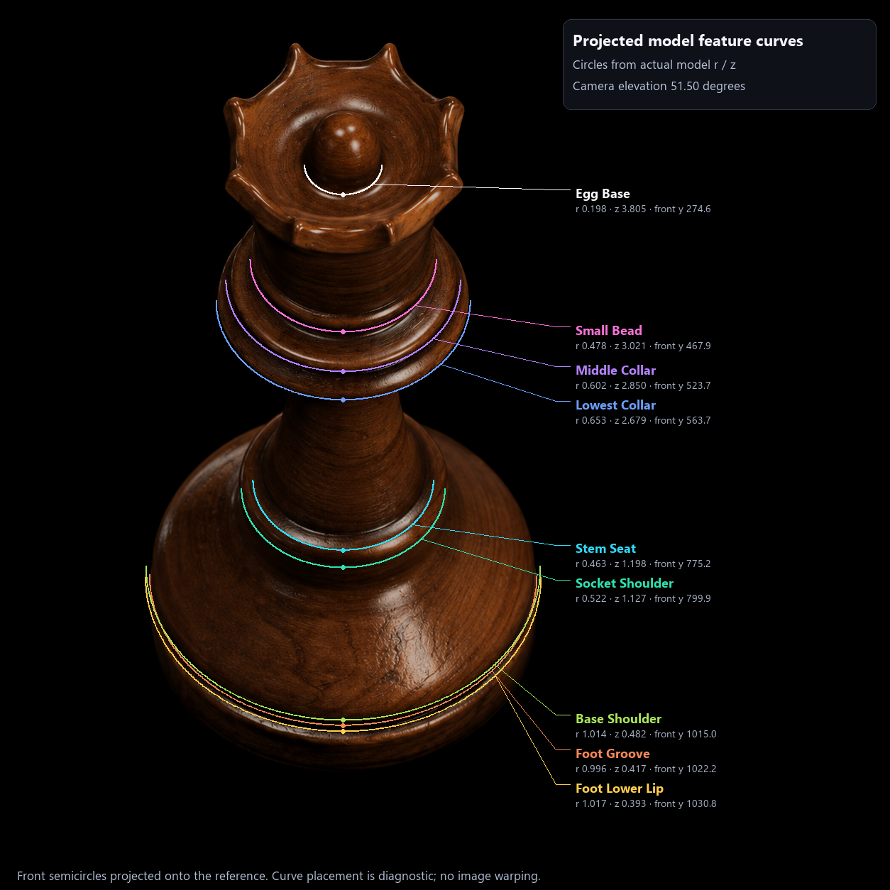
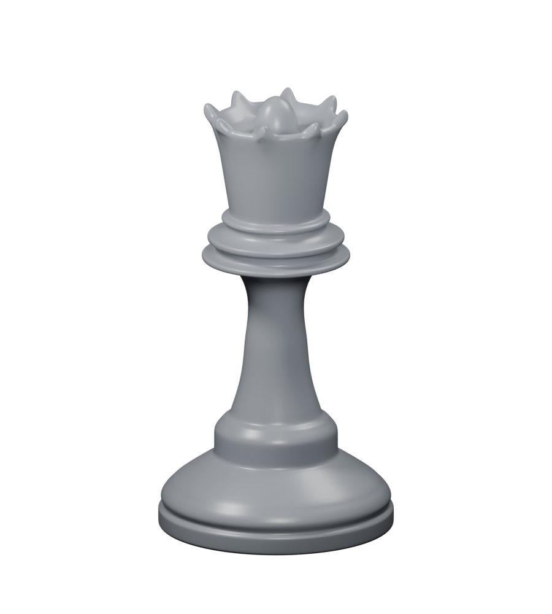

Queen reconstruction
Compare the supplied reference with the rebuilt 3D geometry. Both images use the same camera framing and pixel coordinates. Choose neutral shading or a plain brown gloss preview to inspect the shape.



A comparison image could not be loaded. Keep this HTML file beside the PNG images in the queen-hires folder, then reload.
Drag to pan at 1× or 2×. Hold Space for the reference; release to return. O overlay · R reference · M model. “Blink” alternates the selected revision and the reference without moving them.
Current / Previous compares this shape refinement with the preceding thinning revision. Contours always switch to Current.
Brown preview uses plain, untextured gloss; the wood grain is still deferred.
Inspect the details
These fixed comparison panels and the second-angle view show the current revision. Comparison panels use the neutral material.





Geometry study. Wood grain and the final surface finish are deferred. The overlay compares the unchanged reference and rendered images; it does not stretch or warp either image.